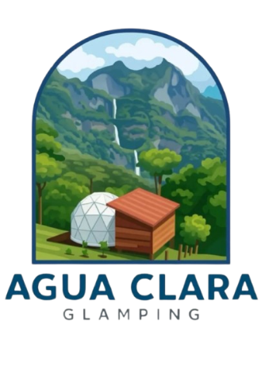
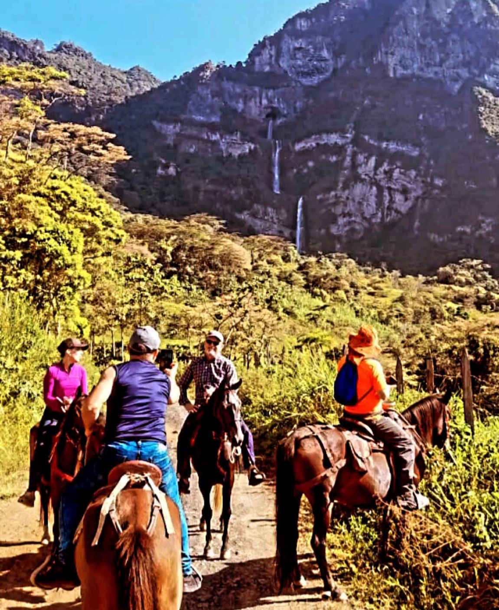
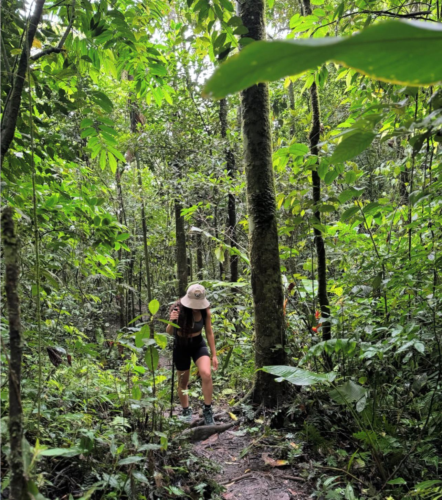
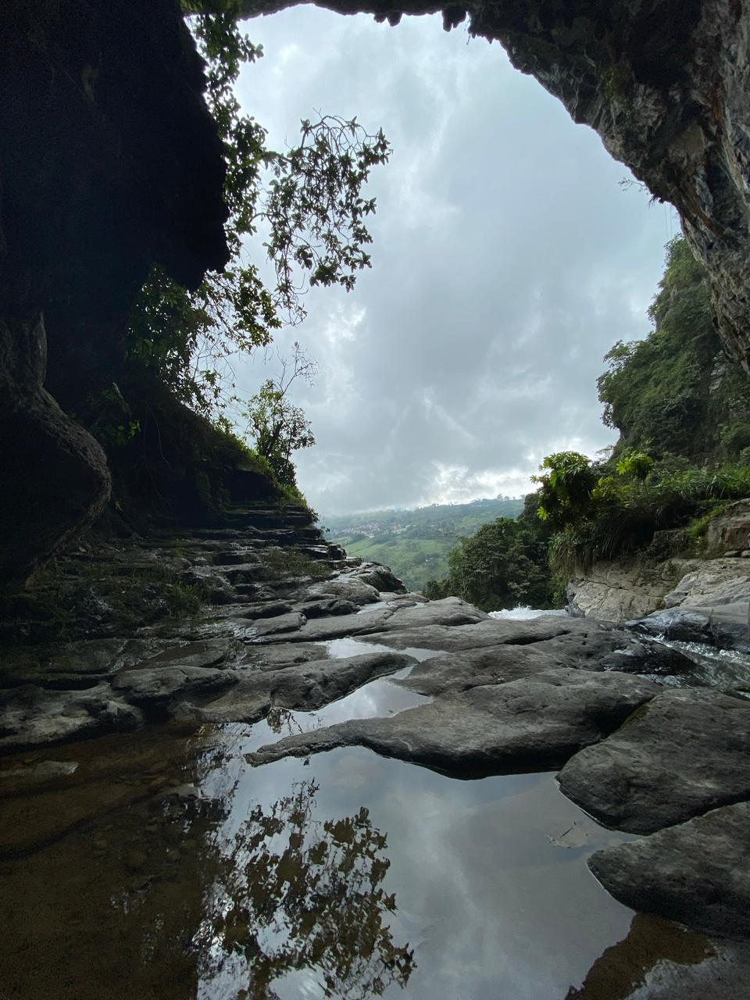
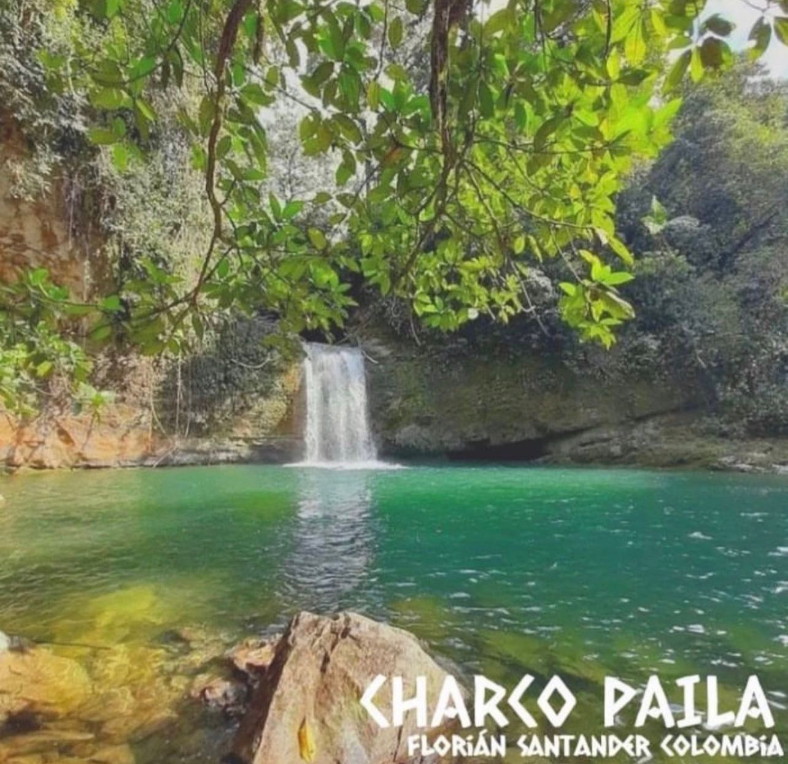
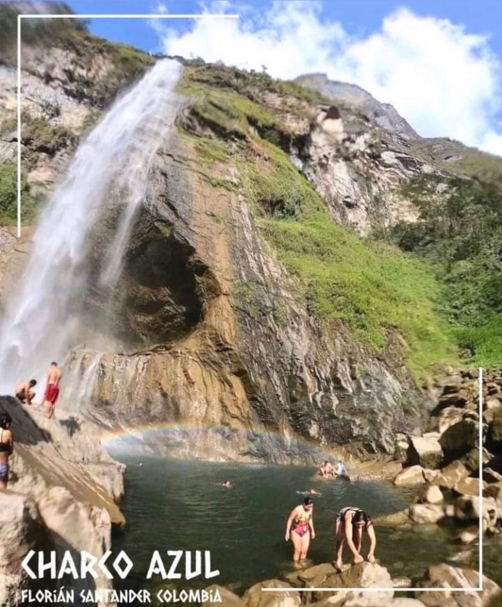
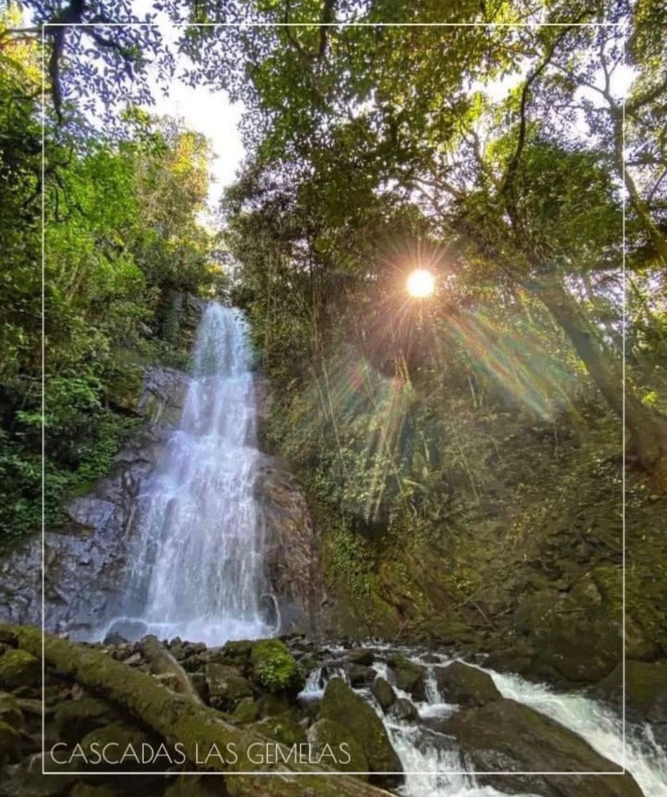
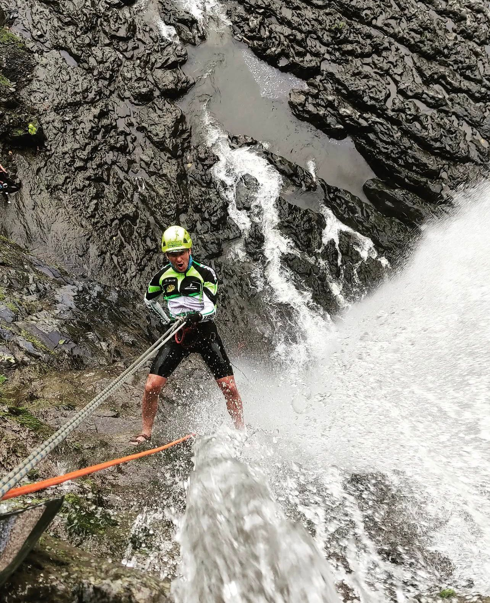

Nuestros espacios
Vista espectacular a las cumbres de Santander. Duerme bajo las estrellas con todo el confort.
Reservar↓
Experiencia única rodeada de naturaleza viva, sonidos del bosque y aire puro.
Reservar↓
Perfectas para descansar en pareja o familia. Arquitectura cálida integrada al paisaje.
Reservar↓


Glamping · Villa AguaClara
Despierta con vistas panorámicas a las cumbres de Santander desde tu cómoda carpa. Un espacio diseñado para quienes buscan el contacto puro con la naturaleza sin renunciar al confort. Las noches estrelladas de Florián cobran vida desde este rincón privilegiado.
¿Qué incluye?


Glamping · Villa AguaClara
Sumérgete en el corazón del bosque nativo. Rodeado de árboles centenarios, aves y el sonido del agua, este glamping te conecta con la esencia más profunda de la naturaleza de Santander. Una experiencia que transforma.
¿Qué incluye?
Cabaña · Villa AguaClara
Arquitectura cálida y acogedora integrada perfectamente al paisaje de Florián. Ideales para parejas o familias que buscan comodidad total con el encanto de una cabaña de montaña. Madera, piedra y naturaleza en perfecta armonía.
¿Qué incluye?
Selecciona tus fechas
Aventura y naturaleza

Recorre los senderos y paisajes de Florián a lomo de caballo. Una experiencia auténtica para toda la familia, guiada por expertos locales que conocen cada rincón del territorio.

Explora los senderos naturales de la región rodeado de bosques, quebradas y miradores únicos. Ideal para conectar con la naturaleza y descubrir la biodiversidad de Santander.

Descubre uno de los paisajes más impresionantes de la región: las majestuosas Ventanas de Tisquizoque, consideradas una de las joyas naturales más hermosas de Colombia. Un lugar donde la naturaleza se abre paso entre la montaña, creando formaciones rocosas y vistas espectaculares que parecen sacadas de otro mundo.

Un paraíso escondido en medio de la naturaleza un remanso de aguas cristalinas rodeado de vegetación exuberante. Un lugar perfecto para desconectarte, refrescarte y sumergirte en la tranquilidad de un entorno natural único.

Descubre el impresionante Charco Azul, donde sus aguas cristalinas de tonos turquesa y azul profundo crean un paisaje simplemente inolvidable. Rodeado de naturaleza y acompañado por la caída de una majestuosa cascada, este lugar es perfecto para desconectarte y vivir una experiencia única.

Dos cascadas que caen en paralelo formando un espectáculo natural único. El sendero atraviesa bosques húmedos llenos de vida, con sonidos de aves y el frescor del agua acompañándote en cada tramo.

Vive una experiencia extrema descendiendo por las majestuosas Ventanas de Tisquizoque, rodeado de naturaleza, altura y vistas impresionantes. Una actividad diseñada para quienes buscan emoción, aventura y superar sus propios límites. Durante el descenso, disfrutarás de vistas privilegiadas del cañón y los valles de Santander, en un entorno único que combina vértigo, belleza y conexión con la naturaleza.
Momentos en Villa AguaClara
Encuéntranos
Hablemos
Comunícate con nosotros y te ayudaremos a planear la escapada perfecta en Florián, Santander.
Escríbenos por WhatsApp